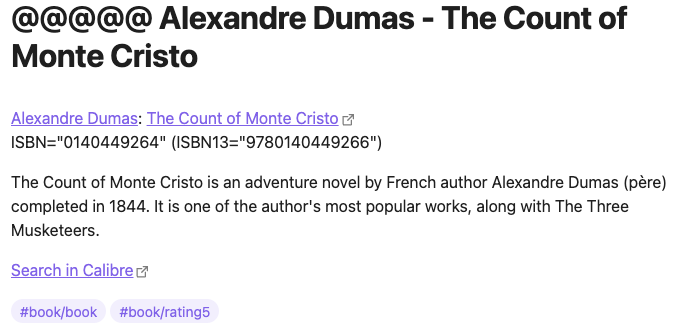
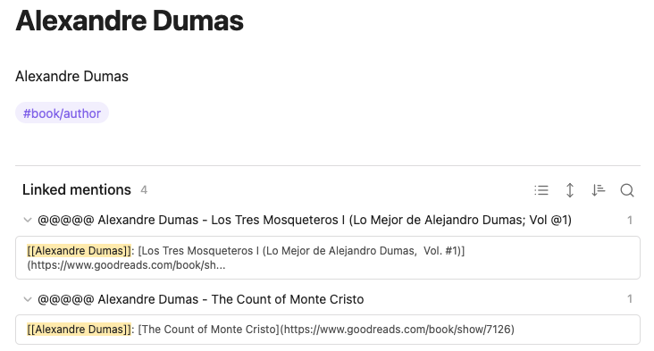

Goodreads export to markdown files
Export your goodreads book reviews into markdown files. Also creates author markdown files connected to the review.
In review files there are also links to the goodreads' book page and Calibre URL to search for this book in your local Calibre collection.
The application add tags based on your shelves.
This is how that looks like in Obsidian:


How to create goodreads export file
This application use CSV file created on goodreads.com. How to create goodreads export see in https://www.goodreads.com/review/import
In 2022 they declared the export feature to be removed by August 2020, but at least at the beginning of 2023 it still works.
In fact I created the application as one-time solution to go away from goodreads with my 600-something book reviews. But as it still works now I use it also to incrementally update my markdown files in Obsidian.
Why this lame approach with manually exported file
Goodreads at 2020 had stopped giving out API keys.
So it's all about making lemonade out of lemons.
I cannot not use the API to fully automate the process, but at least I can still get my data from goodreads.
Unfortunately with this manual export step included.
Incremental updates
Application can add reviews to already existed files.
It reads files from the folders and won't create reviews that are already there. This is possible because there are goodreads book ID in the markdown files - inside link to goodreads.
So even if you rename the file the application still know what book it is about thanks to the goodreads link inside the file. This links created by the application and all you have to do just do not delete or modify them.
Author files
Unfortunately there are no author ID in the goodreads export file.
Despite that the application add to author files link for search on goodreads, with the author name inside the link.
So if you just rename the file, application still will know the original author name from the link. Of cause you should not delete or modify the link.
Author name is always get from the link and not from the author file name.
Merging different author names
In goodreads could be a lot of different spellings of the author name plus versions in different languages.
With this application you can merge them so you will have one list of all author book.
For that all author name versions should be listed as links in one author file -
just copy them from other author files to that primary author file.
First link should contain primary name.
Application will relink all existed and newly created books with other author names
in this file to this primary name.
If you need only this re-link without importing goodreads file use option --merge.
Installation
pip install goodreads-export
It will install Linux or Windows script goodreads-export.
Usage
$> goodreads-export --help
Usage: goodreads-export [OPTIONS] COMMAND [ARGS]...
Create md-files from https://www.goodreads.com/ CSV export.
For example, you can create nice structure in Obsidian.
How to create goodreads export see in
https://www.goodreads.com/review/import In 2022 they declare it to be
removed by August, but at least at the end of 2022 it still works.
Documentation https://andgineer.github.io/goodreads-export/
To see help on the commands use `goodreads-export COMMAND --help`. For
example: `goodreads-export import --help`.
Options:
--version Show version.
-v, --verbose Increase verbosity.
--help Show this message and exit.
Commands:
check Check templates consistency with extraction regexes.
import Convert goodreads export CSV file to markdown files.
merge Merge authors only.
$> goodreads-export import --help
Usage: goodreads-export import [OPTIONS] [OUTPUT_FOLDER]
Convert goodreads export CSV file to markdown files.
OUTPUT_FOLDER Folder where we put result. By default, current folder. If the
folder already exists also merge authors if found author files with many
names.
Documentation https://andgineer.github.io/goodreads-export/
Options:
-i, --in TEXT Goodreads export file. By default
`goodreads_library_export.csv`. if you specify just folder it
will look for file with this name in that folder.
--help Show this message and exit.
If we run in the folder with goodreads export file (goodreads_library_export.csv) the script without parameters, like that
goodreads-export import
It will create in this folder subfolders reviws, toread, authors with the md-files.
If you copy them into Obsidian vault, the files will be inside your Obsidian knowledgebase.